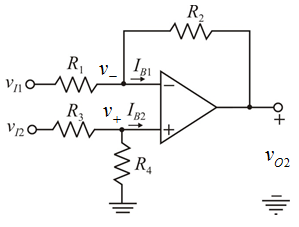

Refer to Figure 2.16 in the textbook.
The total output is summation of effects at output stage due to input offset voltage and input bias current.
The output component because of only input bias voltage is,
Substitute  for
for  ,
,  for
for  and for .
and for .
Refer to Figure 2.16 in the textbook.
The total output is summation of effects at output stage due to input offset voltage and input bias current.
The output component because of only input bias voltage is,
Substitute for , for and for .
Calculate the output component because of input bias current,  .
.
Substitute for  and for
and for  .
.

Draw the circuit diagram with currents and node voltages.

Consider that the inputs are zero.
That is,
Apply Kirchhoff’s current law at non-inverting terminal.
Substitute for ,  for
for  and
and  for
for  .
.
The worst case dc offset voltage is,
Substitute for and  for
for  .
.
Therefore, the worst case dc offset voltage at the output terminal,  is .
is .